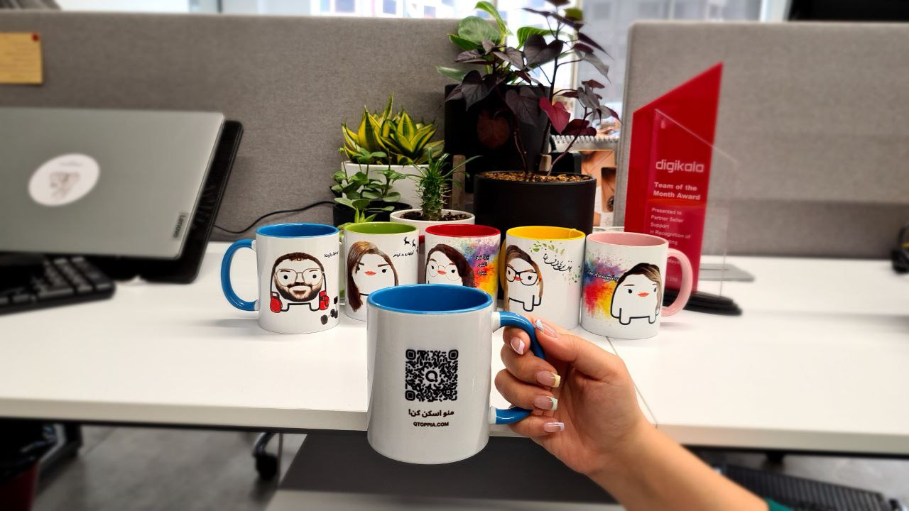

{% include base_path %}
---UPDATING---
At just 11 years old, I was already diving into various creative endeavors. I started my own blog, penned short horror stories, crafted my first hand-drawn and stop-motion animations, and even ventured into creating video games using GameMaker. From a young age, I was driven by a desire to bring my ideas and creativity to life.
Over the years, my journey has been a thrilling one. I've ventured into making my own short film!, launched a podcast with my best friend, composed my own music, designed various websites, and even kicked off a YouTube channel dedicated to CS:GO. Yet, among all these creative pursuits, what I've found to be the most fulfilling is Software Development. I relish every aspect of it, from tackling challenging problems to witnessing my work benefit others.
My industry experience initially started as a young content creator, leveraging Adobe creative tools like Photoshop, Illustrator, and Premiere Pro to create motivational content for a WordPress Website. But after two years I decided to follow my long-held dream, creating web-applications and bringing my ideas to life!
I was filled with excitement and determination, so instead of taking a vacation during the 1399(2020) New Year holidays, I embarked on a self-study journey in Front-End development. I delved into learning HTML, CSS, and JavaScript. Soon after, as the summer began that year, I secured an internship as a Front-End developer at Ganje.
Projects
QToppia: virtual world into everyday objects
Back-End
- NodeJs
- ExpressJs
- Mongoose/MongoDB
- JOI
- winston
- NGINX
Front-End
- ReactJs
- Redux/Redux Toolkit
- Axios
- SCSS
UI/UX/Product
- Figma
- Adobe Illustrator
- Adobe Photoshop
This is my passion project, a labor of love that I've dedicated countless hours to. It encompasses around 10,000 lines of code, and I've invested my free time in it, day and night, even when returning home exhausted from work or university classes. The name QToppia comes from the combination of Utopia and QR codes!
I've handled every aspect of this project myself, from designing the products and application pages in Figma to translating those designs into code, and finally deploying it on an Ubuntu server.
Throughout this journey, I have learned a lot of valuable knowledge whether it was a business matter or technical subject.

This is the "QMug"! This unique mug is equipped with a QR code, enabling users to effortlessly track their habits, access a daily to-do list, and monitor their water intake. By cleverly using drink counts as indicators for specific habits, each sip becomes a step toward achieving personal goals. Also, it leverages Chat GPT features to provide a much smarter environment for the users.